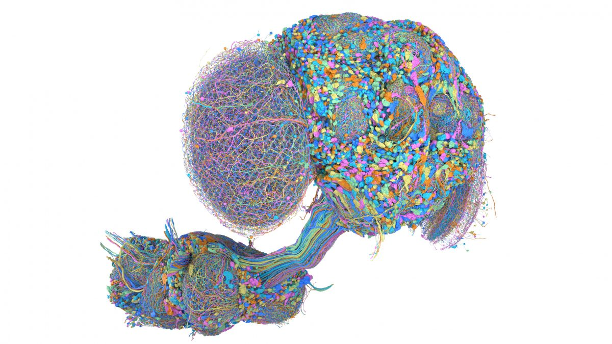
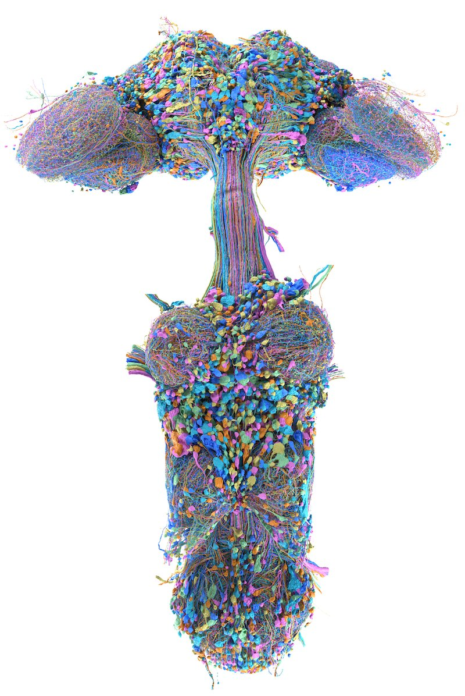

From Neurons to Networks: Understanding the Fly Connectome Through DNge104
How a map of neurons can reveal the hidden logic of the brain

The brain is not simply a collection of neurons. It is a vast network in which neurons communicate with one another through millions of connections. To understand how a nervous system produces behavior, scientists therefore need more than a list of individual cells. They need to understand how those cells are wired together.
This is where the idea of a connectome becomes powerful.
A connectome is essentially a map of the nervous system's anatomical wiring. In graph terms, neurons are the nodes, synaptic connections are the edges, and the number of synapses between two neurons can be represented as the edge weight.
One particularly interesting example comes from the fruit fly, Drosophila melanogaster. In June 2026, the FlyEM team at HHMI Janelia, together with the Cambridge Drosophila Connectomics Group at the MRC LMB and Google Research, released Male CNS v1.0: the first complete connectome of an adult fly's brain and ventral nerve cord. By examining the connectivity of a single descending neuron in this dataset, DNge104, we can see how raw connectivity data is transformed into a biological hypothesis.
What exactly is a connectome?
Imagine a simple network:
A ─────→ B
B ─────→ C
A ─────→ D
D ─────→ CThis looks like an ordinary directed graph. In a connectome, however:
- Node = neuron
- Edge = synaptic connection
- Edge weight = number of synapses
So instead of simply saying "Neuron A → Neuron B", we might have:
Neuron A ── 2,591 synapses ──→ Neuron BThis distinction is important because a connectome tells us about anatomical connectivity, not what the neurons are doing at a particular moment. A road map tells us which roads are connected, but it does not tell us which cars are currently traveling on them.
Connectome = anatomical wiring
Activity recording = neural activity
This distinction becomes extremely important when moving from connectivity data toward biological interpretation.
How is a connectome created?
Creating a connectome is an enormous imaging and reconstruction problem. The Male CNS volume was imaged with focused ion beam scanning electron microscopy (FIB-SEM) at 8 nm isotropic resolution: the ion beam mills away a few nanometers of tissue, the electron beam images the freshly exposed face, and the cycle repeats tens of thousands of times. Google Research's machine-learning segmentation then traced every neuron through the resulting image stack, and human proofreaders corrected the results.
The result is much more than a collection of pictures. The reconstructed volume allows researchers to determine which neurons physically connect to which other neurons.
Why study a fruit fly?
At first, studying a fly might seem unrelated to understanding complex nervous systems. The reason is scale.
Because the fly nervous system is dramatically smaller than that of mammals, researchers can attempt something extraordinarily ambitious: mapping essentially the entire nervous system. (Earlier whole-brain connectomes such as FlyWire contained roughly 140,000 neurons; adding the nerve cord brings the Male CNS to 166,691 annotated neurons in 11,691 cell types.)
The dataset discussed here is Male CNS v1.0, where CNS means Central Nervous System: the brain together with the ventral nerve cord (VNC), connected through an intact neck. This gives researchers an opportunity to study the nervous system as a complete network, from eyes to legs, rather than examining isolated pieces.

Brain → VNC → Body
One of the most useful ways to visualize the fly nervous system is as a hierarchy:
The brain does not need to control every muscle independently. Instead, higher-level commands travel through descending neurons, while circuits in the VNC perform much of the detailed computation required for movement.
The dataset contains roughly 1,300 descending neurons and 700 motor neurons, illustrating this separation between higher-level commands and downstream motor execution. The VNC is therefore not a passive cable between the brain and the body. It is an active computational system.
What is a descending neuron?
The name itself gives the basic idea. A descending neuron carries information from higher brain regions toward the ventral nerve cord and body. An ascending neuron works in the opposite direction, carrying information from the body and VNC up to the brain.
Descending = brain → body
Ascending = body → brain
This directional organization becomes extremely useful when analyzing a connectome because it gives biological meaning to the direction of graph edges.
Understanding a neuron
pre, post, weight, and the anatomical region (ROI) of each synapse.- Dendrites generally receive information.
- Soma is the cell body containing the nucleus.
- Axon carries output toward other cells.
- Synapses are communication points between neurons.
The connectome fields you must understand
If you want to work with connectome datasets, three concepts are especially important.
1. pre
Think of pre as the source or output side of a connection. For A → B, A is the presynaptic neuron.
2. post
post represents the receiving side. For A → B, B is the postsynaptic neuron.
3. weight
This is one of the most important fields. A → B, weight = 1 and A → B, weight = 200 are both "a connection", but the second represents many more synapses between the neurons.
Weight ≈ the number of synapses between connected neurons. Simply counting how many neurons are connected can give a very different picture from counting the synapses involved.
Partner count is not the same as synapse count
This is one of the most important lessons when analyzing connectomes. Imagine:
There are only four partners, but 503 synapses. If we looked only at partner count, every neuron would appear equally important. But the synaptic weights tell a very different story: D carries 500 / 503 ≈ 99.4% of the actual synaptic connectivity.
This is why a good connectome analysis should preserve the edge weight rather than reducing everything to a simple connected/not-connected relationship.
Always carry the weight.
DNge104: a case study
Now we can examine the neuron at the center of this analysis. DNge104 is a bilateral pair of descending neurons, one on each side of the CNS. In Male CNS v1.0 (Cell Type Explorer) they look like this:
| Neuron | bodyId | Input synapses | Output synapses | Predicted NT |
|---|---|---|---|---|
| DNge104_R | 12781 | 13,487 | 3,831 | GABA (0.877) |
| DNge104_L | 556329 | 14,095 | 4,034 | GABA (0.877) |
But there is an important technical warning here: 13,487 inputs does not mean 13,487 unique input neurons. These values are synapse counts, and multiple synapses can exist between the same pair of neurons. That is why connectome analysis must always distinguish between unique partners and total synaptic weight.
One more subtlety, specific to insects: fly synapses are polyadic. A single presynaptic site typically contacts several postsynaptic neurons at once, so when you count connections (pre→post pairs) rather than presynaptic sites, the totals grow substantially. You will see this below: the two DNge104 neurons have about 7,900 output synapses between them, yet those release sites make roughly 19,200 downstream connections. Neither number is wrong. They are counting different things, and knowing which one you are looking at is half the job.
What does GABA tell us?
Connectivity tells us who is connected to whom. Neurotransmitter information adds another layer of interpretation. A simplified framework for the fly:
| Neurotransmitter | General effect |
|---|---|
| Acetylcholine (ACh) | Excitatory |
| GABA | Inhibitory |
| Glutamate | Usually inhibitory in the fly CNS |
| Dopamine / octopamine | Modulatory |
For DNge104, the annotation gives predictedNt = GABA with confidence = 0.877. The important word is predicted. In Male CNS the transmitter is inferred by a neural network from the appearance of each synapse in the EM images, not measured experimentally for that individual neuron. So instead of writing A → B, we can write:
DNge104 ──GABA (inhibitory, p≈0.88)──→ targetThe surprising connectivity of DNge104
Here is where the analysis becomes interesting. You might expect a descending neuron to primarily connect to motor neurons: brain → DNge104 → motor neuron → muscle. But the connectivity looks very different. Grouping DNge104's downstream connections by the superclass of the target neuron (summed across both DNge104 neurons) gives:
The two sensory rows (highlighted) add up to 14,584 of 19,216 connections: roughly 76% of DNge104's output goes to sensory neurons. Almost none of it goes directly to motor neurons.
That changes the biological question. Instead of asking "What movement does DNge104 command?", we can ask:
"Why would a descending brain neuron target sensory systems so strongly?"
Who are these sensory targets?
The strongest downstream cell types (both DNge104 neurons combined) are:
| Target type | Synapses | What it is |
|---|---|---|
| SNta20 | 2,084 | Tarsal (foot) sensory neurons, cholinergic |
| SNta11 | 1,383 | Tarsal sensory neurons |
| SNta29 | 1,105 | Tarsal sensory neurons |
| BM_InOm | 1,060 | Bristle mechanosensory neurons between the eye facets (inter-ommatidial) |
| SNta37 | 868 | Tarsal sensory neurons |
The SNta neurons are tarsal sensory neurons associated with the fly's feet; BM_InOm are bristle mechanosensory neurons on the head, located between the eye facets. Interestingly, the same types (SNta20, BM_InOm, SNta11) are also DNge104's strongest inputs, so DNge104 sits in a tight, reciprocal loop with touch-sensing neurons.
Because DNge104 is predicted to be GABAergic, this connectivity is compatible with the possibility that it inhibits particular sensory pathways. But connectivity alone does not establish the behavioral function.
Corollary discharge: the bigger idea
Suppose a fly moves one of its legs. The movement itself generates sensory signals from the foot. The nervous system therefore faces a problem: how does the brain distinguish self-generated signals from external events? One mechanism nervous systems use is corollary discharge: a copy of the motor command is sent to sensory circuits to adjust how the expected feedback is processed.
A possible explanation for DNge104
The connectivity suggests a hypothesis: the brain sends a command down DNge104, DNge104 releases GABA onto sensory terminals, and the sensory feedback from the feet and head bristles is reduced or reshaped. One interpretation is that DNge104 participates in sensory gating of self-generated touch, potentially during behaviors such as grooming, where the legs repeatedly brush the head and eyes.
The key word, however, is hypothesis. The connectome does not prove that DNge104 controls grooming. The reasoning follows a scientific chain:
This distinction between observation, interpretation, hypothesis, and experiment is perhaps the most important lesson of the entire analysis.
Turning raw data into biological knowledge
So how do we actually perform this analysis computationally? A connectome dataset can be thought of as two major tables, both available from the official Male CNS download page.
The node table
One row represents one neuron: its bodyId, cell type, superclass and other annotations. Male CNS v1.0 annotates 166,691 neurons this way (the connectivity tables also include unannotated fragments, so they list more bodies than that).
bodyId type superclass
12781 DNge104 descending
556329 DNge104 descending
12345 SNta20 sensoryThe edge table
One row represents a connection between two bodies. The full connection table runs to well over 100 million rows.
bodyId_pre bodyId_post weight
10352 10351 2591Why an edge list is better than a giant matrix
With 166,691 neurons, a complete neuron-by-neuron adjacency matrix would contain 166,691² ≈ 27.8 billion cells. Most of those would be zero, because most neuron pairs are not directly connected. Instead of storing a mostly-empty matrix:
A B C D E
A 0 4 0 0 2
B 0 0 8 0 0
C 1 0 0 3 0we store only the connections that exist:
pre post weight
A B 4
A E 2
B C 8
C A 1
C D 3This is an edge list, which is far more efficient for a sparse network.
The hidden power of JOIN operations
A large part of connectome analysis is essentially a sequence of database operations. Suppose we want to know: who does DNge104 connect to?
Why merge() and groupby() matter
In Python / pandas, the analysis can be expressed in a few lines:
import pandas as pd
ann = pd.read_feather("body-annotations-male-cns-v1.0-minconf-0.5.feather")
edges = pd.read_feather("connectome-weights-male-cns-v1.0-minconf-0.5.feather")
dn_ids = ann.loc[ann.type == "DNge104", "bodyId"]
out = edges[edges.bodyId_pre.isin(dn_ids)]
# "For every target neuron, what biological identity does it have?"
m = out.merge(ann, left_on="bodyId_post", right_on="bodyId", how="left")
by_type = (
m.groupby(m.type.fillna("(unnamed)"))["weight"]
.sum()
.sort_values(ascending=False)
)
print(by_type.head())Instead of examining thousands of individual connections, we obtain a summary:
SNta20 2084
SNta11 1383
SNta29 1105
BM_InOm 1060
SNta37 868Swap type for superclass in the groupby and you get the sensory / VNC-intrinsic / ascending breakdown shown earlier.
Three levels of connectome analysis
| Level | Unit | Question |
|---|---|---|
| 1. Individual neuron | bodyId = 12781 | Who does this specific neuron connect to? |
| 2. Cell type | DNge104 | What does this neuron type generally connect to? |
| 3. Functional class | descending, sensory, ascending, motor, VNC intrinsic | How does information flow through the nervous system? |
Moving between these levels prevents you from becoming trapped in either microscopic details or overly broad summaries.
Input and output: two different stories
Every neuron can be studied from two directions. Input analysis asks: what information does DNge104 receive? (For DNge104, most input arrives in the gnathal ganglion and the T2/T3 leg neuropils, largely from the same tactile neurons it targets.) Output analysis asks: what does DNge104 anatomically influence? A complete analysis examines both sides.
Why comparison is essential
Finding an interesting number is not enough. Suppose we observe that DNge104 sends ~76% of its output to sensory neurons. That sounds interesting, but compared with what?
- If the average descending neuron sends 70% of its output to sensory neurons, then 76% is unremarkable.
- If typical descending neurons send 5% to sensory neurons, then 76% is a striking specialization.
A number without a comparison is not evidence of unusualness. A useful control is another comparable descending neuron, or the whole population of ~1,300 descending neurons.
From connectome analysis to scientific discovery
This is the transformation that makes connectomics powerful. You begin with more than a hundred million rows of data. You end with a biological question that can be experimentally tested.
Observation is not the same as explanation
DNge104 is GABAergic. DNge104 has many outputs onto sensory neurons. Several strong targets are tactile sensory neurons.
DNge104 may suppress or modulate sensory signals.
DNge104 may participate in corollary discharge during grooming.
Manipulating DNge104 should alter sensory activity and/or behavior during relevant self-generated movements.
That is where connectomics meets experimental neuroscience.
Building your own connectome analysis system
The goal is not merely to build a graph visualization. The goal is to build a system that can answer questions such as:
- Which neurons provide input to this cell?
- Which cell types receive its output?
- How strong are those connections?
- Which anatomical regions are involved?
- What neurotransmitter is associated with the neuron?
- Is the connectivity pattern unusual compared with similar neurons?
- What biological hypothesis does the pattern suggest?
- What experiment could test that hypothesis?
You do not even need to download the 1 GB tables to start: the official neuPrint server exposes the same graph through a web UI and a Python client (neuprint-python), and the Cell Type Explorer gives a one-page summary for every cell type.
The three rules to remember
1. Group by type
Don't only ask "what does bodyId 12781 connect to?" Also ask "what cell types does DNge104 preferentially connect to?" Cell-type-level patterns reveal organization that is difficult to see at the level of individual neurons.
2. Always use synaptic weight
Don't report only "DNge104 has thousands of downstream partners." Ask how many synapses go to each partner, then compute the percentage of total synaptic weight. This prevents weak connections from appearing equivalent to strong ones.
3. Always connect the observation to a test
Don't stop with "DNge104 connects to sensory neurons." Turn it into a hypothesis (DNge104 may gate self-generated sensory feedback), a prediction (manipulating DNge104 should alter sensory responses during self-generated movement), and an experiment (manipulate DNge104, record neural activity, measure behavior). That is the transition from data analysis to scientific research.
The bigger picture
The most exciting thing about connectomics is that it changes the way we think about neuroscience. Instead of looking at one neuron in isolation, we can ask:
| Who? | Which neurons are connected? |
| Where? | Where are those neurons located? |
| How much? | How many synapses connect them? |
| What type? | Sensory, motor, ascending, descending, intrinsic? |
| What signal? | GABA, acetylcholine, or another transmitter? |
| What pattern? | Are the connections selective? |
| What function? | What biological interpretation is consistent with the pattern? |
| What test? | What experiment could distinguish that hypothesis from alternatives? |
Final takeaway
A connectome is not simply a giant database of neurons. It is a map of biological relationships. The real power appears when we combine neuron identity, connectivity, synaptic weight, cell type, neurotransmitter, anatomical location, and comparison, and let them point toward a biological hypothesis and an experimental test.
DNge104 provides a useful example of this process. It is a descending neuron with substantial connectivity to sensory systems, including tactile sensory neurons of the feet and head. Combined with its predicted GABAergic identity, this connectivity suggests a possible role in sensory gating and corollary discharge.
But the important scientific conclusion is not that the hypothesis has been proven. The important conclusion is that the connectome provides a testable hypothesis.
Turn anatomical wiring into questions about how the nervous system computes, controls movement, processes sensation, and produces behavior.
And that is how you move from "I can read the CSV" to "I can formulate a testable neuroscience question from a connectome."
Sources & further reading
- Berg, S. et al. Sexual dimorphism in the complete connectome of the Drosophila male central nervous system. Cell (2026). Preprint: doi:10.1101/2025.10.09.680999
- Male CNS Connectome: official dataset site, v1.0 released 8 June 2026 (CC-BY 4.0), with downloads of the annotation and connectivity tables
- FlyEM Male CNS project page at HHMI Janelia Research Campus (source of the images above)
- neuPrint: query the male-cns:v1.0 graph interactively
- DNge104 in the Male CNS Cell Type Explorer: per-type synapse counts, partners and neurotransmitter prediction used in this post